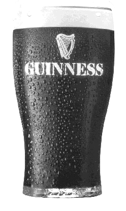

back to Paul's Poetry Page
back to Paul's Poetry Page|
my heart is a freshly poured Guinness all succulent velvet foam ignoring your violent thirst knowing that your only revenge is to abandon it entirely in which case its destiny remains unchanged: to dissolve into its elemental blackness before being devoured. Paul David Mena 3 December, 1997 Boston, MA
|
 |
back to Paul's Poetry Page